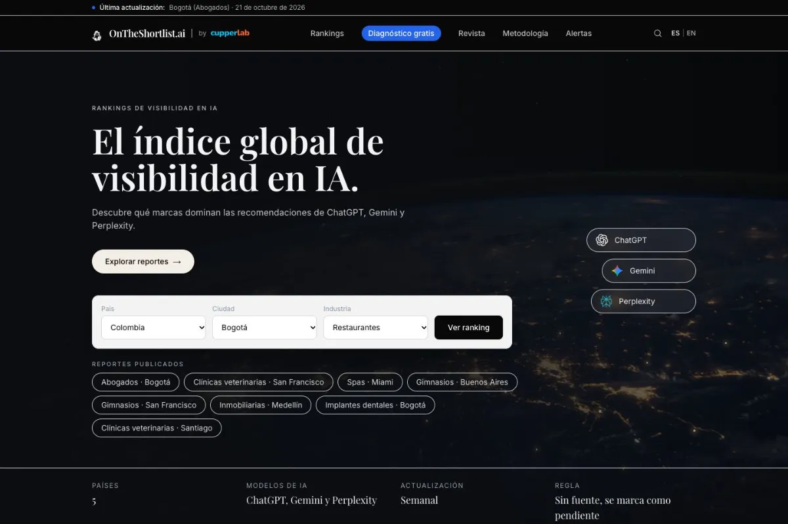

Rankings públicos
Datos verificables para consultar la presencia de empresas en las recomendaciones de la IA.
HACER VISIBLETRABAJO / 02 — ONTHESHORTLIST.AI
Un producto propio que muestra, con datos verificables y rankings públicos, la presencia de empresas en las recomendaciones de la IA.
Explorar la web ↗
01 / EL PUNTO DE PARTIDA
OnTheShortlist hace tangible una propuesta de Cupperlab: ayudar a que la IA recomiende a una empresa. Los rankings públicos permiten mostrar cómo se mide esa visibilidad y el diagnóstico abre la puerta a solicitar ayuda.
02 / EL PRODUCTO
Datos verificables para consultar la presencia de empresas en las recomendaciones de la IA.
HACER VISIBLEUn punto de entrada para que una empresa solicite ayuda con su visibilidad.
ABRIR LA CONVERSACIÓNUna base de datos propia como parte de la estructura del producto.
ORGANIZARPublicaciones que amplían la propuesta de contenido de la plataforma.
PUBLICAR03 / UNA VISIÓN CONECTADA
Datos públicos y diagnóstico forman parte de una misma experiencia.
TU SIGUIENTE ELEMENTO
Cuéntanos qué necesitas construir o mejorar. Empezamos por el alcance.
Quiero algo así ↗